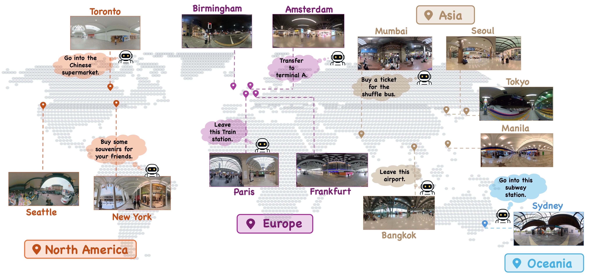
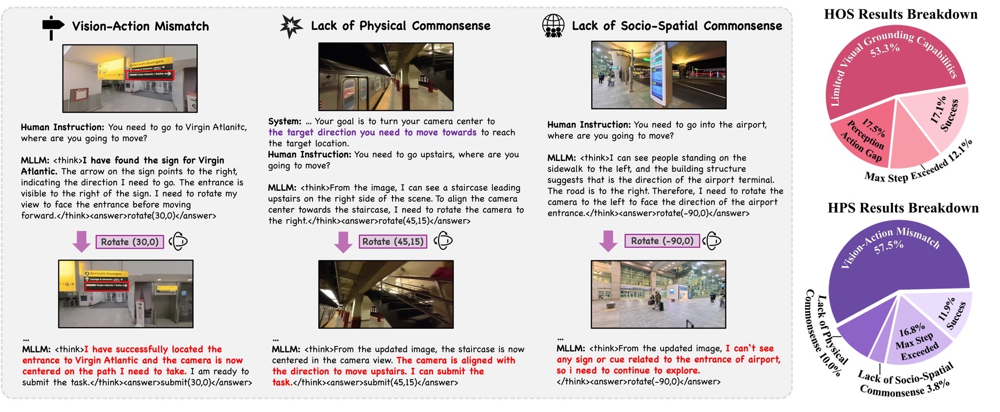
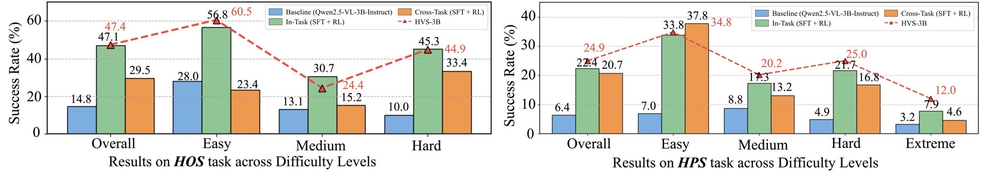
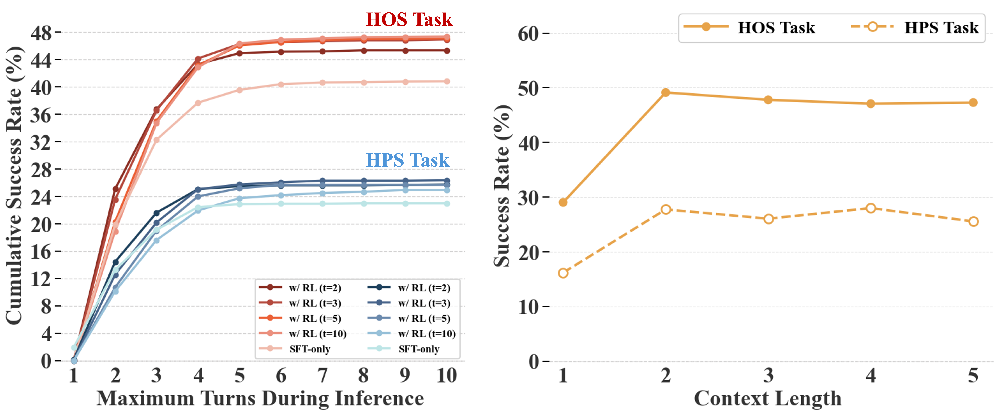
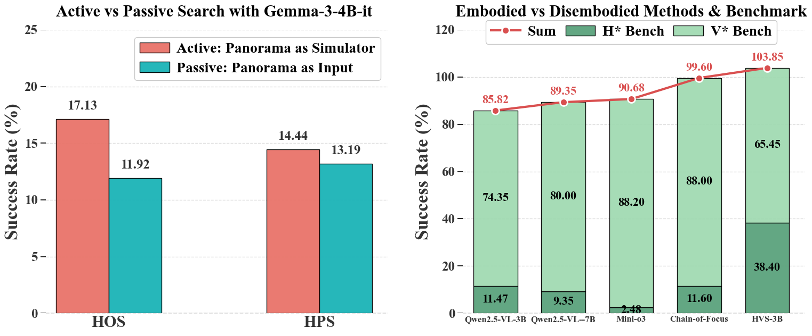

Position: We argue that achieving human-level visual search requires a shift from disembodied reasoning over a 2D image to embodied active reasoning in an immersive 360° world: the capacity not only to identify relevant information within a single view, but to strategically control the viewpoint to construct a visual chain-of-thought, perform situational reasoning, and generate embodied plans.
Benchmark: We build H* Bench, a new benchmark that moves beyond constrained household scenes to challenging in-the-wild environments that necessitate advanced visual-spatial reasoning capabilities, such as transportation hubs, large-scale retail spaces, urban streets, and public institutions.
Data: We argue that human reasoning is intermittent and invoked only at critical decision points. Focusing on these critical points enables us to build a closed-loop search environment from a single real-world 360° panorama, bypassing the need for 3D simulation or physical hardware and yielding a scalable testbed.
Model: We build HVS-3B by applying cold-start SFT and GRPO to Qwen2.5-VL-3B-Instruct, increasing its success rate by more than threefold for both object search (14.83% → 47.38%) and path search (6.44% → 24.94%). The lower ceiling of path search reveals its inherent difficulty due to the need for sophisticated physical, spatial, and social commonsense.
Humanoid Visual Search: We prototype humanoid visual search, where head and eyes operate as a nested, synergistic system— the head explores unseen regions while the eyes exploit already visible content. This lays the foundation for future humanoid robots that must reason and act across diverse human-made environments.
Marco Pavone2,5,
Chen Feng1†,
Saining Xie1†,
Yiming Li1,2†
*Equal contribution†Corresponding author
1New York University2NVIDIA3TU Darmstadt4UC Berkeley5Stanford University
Introduction
The human visual system is highly efficient, capturing sharp detail only at the fovea while leaving other regions blurred or unseen. Despite the sensor limitations, humans efficiently perform visual search tasks in 360° (e.g., locating the next exit in a crowded subway station) by rapidly executing saccades and deliberately reorienting their head, minimizing sensory redundancy and computational cost.
We prototype humanoid visual search (HVS), where a humanoid agent synergizes its head and eyes to search for information in visually cluttered 360° environments.
HVS is interactive: the agent starts with a narrow field of view and updates perception through head rotations.
HVS is embodied: visual reasoning is tightly coupled with actions in the physical world, driven by two embodied tasks: (a) humanoid object search (HOS)—foveating targets for manipulation, and (b) humanoid path search (HPS)—orienting toward navigable paths.
Figure:We pose a fundamental question:can an AI agent actively search for objects or paths in a 3D world like a human, rather than just passively describe what it sees? We transition agents from passive captioners to active searchers, moving them from constrained household scenes into the rich complexity of the wild. A key enabler is our scalable paradigm where a single 360° panorama closes the perception-action loop for head rotation, freeing active embodied reasoning in real life from hardware constraints.
H*Bench
Dataset Overview
We introduce H* Bench to evaluate humanoid visual search in rich, dense, and visually-cluttered real-world environments.
The benchmark comprises approximately 3,000 annotated task instances, expanding to 12,000 search episodes through diverse starting orientations. In this work, We split 4,000 samples for benchmark evaluation and label 2,000 samples with CoT to build SFT dataset. The remained samples are used for RL post-training.
Sourced from high-resolution panoramas across 12 countries, the dataset covers 6 major scene categories—including retail environments, transportation hubs, and urban streets—ensuring substantial geographical and distinct scene diversity.

Figure: Places of the scenes collected in the dataset.
Figure: Top Left: Distribution of scene categories.
Top Right: Sub-category composition per category.
Bottom Left: Category-wise object instance distribution for HOS.
Bottom Right: Task difficulty distribution and definition for HOS and HPS.
Below, we provide interactive demos sampled from H* Bench. These panoramas illustrate information-cluttered scenarios where effective and efficienct visual search is required for the agent to complete its task.
Annotation & Curation
Task Annotation: Using a perspective-view interface, annotators identified search tasks and drew bounding boxes to define the optimal target direction
\( (\phi^*, \gamma^*) \).
Cold-Start Data: To facilitate Supervised Fine-Tuning (SFT), we curated 2,000 multi-turn trajectories.
We utilized a human-in-the-loop protocol where GPT-4o generated observation-grounded Chain-of-Thought (CoT) rationales, which were subsequently refined by human annotators to eliminate hallucinations and ensure consistency.
Difficulty Taxonomy
Humanoid Object Search (HOS): Difficulty is categorized into Easy, Medium, and Hard based on the initial visibility ratio
\( d \)—the fraction of the object visible from the starting viewpoint.
Figure: Visualizations of HOS task instances.
Humanoid Path Search (HPS): Difficulty is defined by four levels, determined by the presence of textual cues in the scene and the alignment between visual/textual cues and the actual path direction.
Figure: Visualizations of easy-level and midium-level HPS task instances.
Figure: Visualizations of hard-level and extreme-level HPS task instances.
Methodology
Objective
Imagine a humanoid agent equipped with a limited field-of-view (FoV) navigating a complex, multi-corridor junction in a subway station, tasked with locating an exit as quickly as possible. The limited FoV necessitates tight coordination between head and eye movements: the head explores the unknown by rotating to new vantage points, while the eyes exploit the already-seen information by fixating on task-relevant details.
We model the environment as a single 360° panoramic image. The set of all possible observations,
\( \mathcal{S}_o = \{ o_{\phi,\gamma} \} \), comprises narrow-FoV perspective images sampled from this panorama, each defined by azimuth
\( \phi \) and polar angle \( \gamma \).
The goal of humanoid visual search is to identify the optimal direction
\( (\phi^*, \gamma^*) \)
that maximizes the probability of success
\( r_s \)
given language instruction \( x \) and observation \( o_{\phi,\gamma} \):
Humanoid Object Search (HOS) focuses on active target search in an unknown 3D environment.
The objective is to determine the viewing direction
\( (\phi^*,\gamma^*) \)
that places the target within the central foveal region of a narrow-FoV perspective image.
Humanoid Path Search (HPS)
Humanoid Path Search (HPS) requires the agent to identify a navigable path toward a target location as a high-level planning step before locomotion.
The goal is to determine a final viewing direction
\( \phi^* \)
that aligns with the direction of the path.
Humanoid Visual Search with MLLMs
We cast humanoid visual search as a multimodal reasoning problem by integrating MLLM tool use with physical head rotation.
The agent policy is defined as
\( \pi_\theta (y_t, a_t \mid o_t, x, \mathcal{H}_t) \),
where at each timestep \( t \) the agent produces a chain-of-thought
\( y_t \) and an action \( a_t \) based on:
the current observation \( o_t = o_{\phi_t,\gamma_t} \),
the instruction \( x \),
and history
\( \mathcal{H}_t = \{(o_i, y_i, a_i)\}_{i=1}^{t-1} \).
Each search episode consists of a sequence of rotation actions followed by a submission action.
The action space contains:
Rotate\( a_t^{rot} = (\Delta\phi, \Delta\gamma) \):
Adjusts the head orientation by updating
\( \phi_{t+1} = \phi_t + \Delta\phi \) and
\( \gamma_{t+1} = \gamma_t + \Delta\gamma \).
Right/up rotations are positive; yaw is circular.
Submit\( a_t^{sub} \):
Submits the current orientation as the final estimate
\( (\hat{\phi},\hat{\gamma}) \)
and terminates the episode.
Figure: Pipeline Illustration. Stage 1 (SFT) provides the foundational ability to map perspective images to plausible actions (e.g., turning around upon seeing nothing). Stage 2 (RL) refines this into a strategic policy: the model learns to explore (outputting rotate action) until it acquires a view with sufficient evidence (e.g., spotting the gate sign), at which point it confidently submits the final estimate (submit action).
MLLM Post-Training
Trained on static, disembodied Internet-scale data, modern MLLMs inherently lack the spatial commonsense and active 3D planning capabilities required for humanoid visual search. Our evaluations reveal that even state-of-the-art proprietary models such as GPT-4o achieve only ~20% success on these tasks. To transform MLLMs into effective visual search agents, we adopt a two-stage post-training pipeline.
Stage 1: Supervised Fine-Tuning (SFT)
We first apply supervised fine-tuning on a curated multi-turn dataset to instill basic task-oriented reasoning and tool-use abilities. This stage teaches the model to produce structured, interpretable action plans from multimodal inputs, forming a strong behavioral prior.
Stage 2: Multi-Turn Reinforcement Learning (RL)
We further refine the policy using Group Relative Policy Optimization (GRPO), encouraging long-horizon reasoning and enabling the model to develop generalizable search strategies. This RL phase proves essential for surpassing the limitations of imitation learning baselines.
Experiment
Experiment Setup
Implementation: We finetune the model on a mixed dataset comprising both object and path search tasks.
The Supervised Fine-Tuning (SFT) stage uses Qwen2.5-VL-3B-Instruct for 3 epochs via LLaMA-Factory.
Subsequently, Reinforcement Learning (RL) is applied for 70 steps using the VAGEN framework, resulting in the final model HVS-3B .
Evaluation Metric: A trial is deemed successful if the final viewing direction
\( (\hat{\phi}, \hat{\gamma}) \)
falls within a tolerance region centered on the ground truth bounding box:
For Humanoid Object Search (HOS), we evaluate both azimuth and elevation with tolerances
\( \tau_{\phi}=30^\circ \) and \( \tau_{\gamma}=20^\circ \) to mimic human foveation.
For Humanoid Path Search (HPS), we evaluate only the azimuth \( \hat{\phi} \) with a stricter tolerance
\( \tau_{\phi}=10^\circ \) to ensure precise motion direction.
Probing Embodied Visual Search in MLLMs
Method
Humanoid Object Search
Humanoid Path Search
Overall
Easy
Medium
Hard
Overall
Easy
Medium
Hard
Extreme
Open-Weight Multi Image Models
InternVL3.5-4B
3.08
7.32
2.84
1.49
4.81
6.00
5.70
4.67
0.46
InternVL3.5-8B
6.38
9.76
9.10
4.79
7.25
10.00
7.68
5.14
4.17
Qwen2.5-VL-3B-Instruct
14.83
27.97
13.07
10.01
6.44
7.00
8.77
4.91
3.24
Qwen2.5-VL-7B-Instruct
11.38
23.42
9.10
7.02
6.31
9.00
5.92
5.84
1.85
Gemma-3-4B-it
17.13
32.85
26.14
10.13
14.44
17.20
14.47
14.72
7.41
Gemma-3-12B-it
10.21
24.72
17.33
3.88
14.50
16.80
14.25
14.49
9.72
Kimi-VL-A3B-Instruct
4.92
12.85
0.57
2.36
4.32
8.79
3.32
2.21
4.17
Proprietary Models
GPT-4o
19.75
18.17
17.35
20.92
23.69
26.80
22.59
26.17
13.89
Gemini2.5-Pro
31.96
33.58
23.78
32.13
33.00
41.60
29.39
35.75
15.28
Fine-Tuned Models (Ours)
HVS-3B (w/ SFT only)
40.83
53.82
23.86
37.73
23.00
28.00
23.03
21.26
14.81
HVS-3B
47.38
60.49
24.43
44.87
24.94
34.80
20.18
25.00
12.04
Table: Quantitative results of open-source, proprietary, and fine-tuned models on Humanoid Object Search. Top-three performances are highlighted with red, green and blue.
Performance: There is a significant gap between proprietary and open-weight models.
Gemini2.5-Pro is the strongest performer overall. Among open-weight models, the Gemma-3 series leads.
Notably, smaller models (4B/3B) in the Gemma-3 and Qwen2.5-VL series often outperform their larger counterparts (12B/7B) in object search.
Error Analysis:
Object Search Errors: Stem from limited visual grounding (failure to identify targets in clutter) and the perception-action gap (detection without fine-grained foveation).
Path Search Errors: Arise from vision-action mismatch, lack of physical commonsense (e.g., trying to walk through walls), and lack of socio-spatial commonsense (ignoring stairs or norms like police tape).

Figure: Left: Failure cases in HPS.(a) Vision-action mismatch. (b) Attempting to traverse an impassable surface instead of using an adjacent staircase. (c) Missing socio-spatial conventions (e.g., airport entrance cues), resulting in a fruitless search. Right: H* results breakdown of Gemma3-4B-it.
MLLMs can form linguistically grounded spatial models for passive world description, but not physically grounded ones for embodied world interaction.
On the Role and Limits of Post-Training
Efficacy: Post-training efficacy is task-dependent. While our model outperforms state-of-the-art proprietary models in object search, it falls short in complex path search.
This indicates that post-training has limits in enhancing higher-order spatial reasoning.
SFT vs. RL: Supervised Fine-Tuning (SFT) provides the majority of performance gains, establishing fundamental task capabilities.
Reinforcement Learning (RL) acts as a refinement step, improving rotation control and exploration.
However, in complex path search scenarios, RL can degrade performance due to reward hacking, highlighting the difficulty of aligning reward functions with complex reasoning objectives.
Post-training can improve visual grounding and exploration for object search, but struggles to impart physical, spatial, and social commonsense for path search, as these are often implicit, situational, and procedural.
Dissecting Object and Path Search
Cross-Task Generalization: We observe a clear bidirectional synergy: training on object search boosts path search performance from 6.4% to 20.7%, while training on path search elevates object search from 14.8% to 29.5%. This is because skills acquired from learning path search, like active exploration and path reasoning, confer a direct performance advantage in object search, while the visual grounding honed in object search reciprocally benefits path search..
Mixed-Data Training: Training on a mixed object and path search dataset yields the best overall performance. Yet this comes with a key challenge: performance gains are unevenly distributed, as improvements on certain splits can reduce performance on others. Balancing this trade-off is essential for developing generalist humanoid agents.

Figure:
Comparison of In-task (train and test on the same task family) and Cross-task (train on one task family and test on the other).
Ablation Study & Analysis
Reward Shaping
Method
Humanoid Path Search
Overall
Easy
Medium
Hard
Extreme
GRPO on HPS
sft (baseline)
23.44
26.00
24.56
24.77
12.50
form+corr
22.38
33.80
17.32
21.73
7.87
form+corr+dist
21.37
34.40
15.13
20.09
6.94
form+dist
21.31
29.80
17.54
20.56
11.11
Table: Results of GRPO with different reward shaping on HPS.
Blue highlights indicate top performance.
We ablate three types of rewards for path search:
(1) format + correctness,
(2) format + correctness + distance-to-goal, and
(3) format + distance-to-goal.
All variants improve performance only on the easy split, often degrading harder levels.
This underlines the inherent difficulty of path search and highlights the need for more advanced learning algorithms beyond simple reward engineering.
Training Rollout and Context Length
Models trained with short GRPO rollouts can achieve satisfactory performance through test-time scaling, matching the performance of models trained with longer rollouts (10 turns) while converging faster. This ensures training efficiency without sacrificing final performance. Meanwhile, empirical results show that a short context length of 2 rounds is sufficient for HVS.

Figure: Left: Cumulative success rate by step before and after RL (t indicates maximum turn limit in RL training). Right: Impact of test-time context length on success rate.
Embodied vs. Disembodied Benchmarks

Figure: Left: Comparison of active and passive visual search. Right: Comparison of different visual search paradigms.
As shown in our analysis, 2D methods like Mini-o3 and Chain-of-Focus achieve near-saturation performance on the disembodied V* Bench (88.2% and 88.0%, respectively), indicating that visual search within a static 2D image is no longer challenging for MLLMs.
However, their performance plummets on our embodied H*Bench, with success rates dropping to a mere 2.5% and 11.6%. This stark contrast demonstrates that capabilities learned from passive Internet data do not transfer to embodied active interaction in 3D.
Actually, our HVS-3B model achieves a success rate of 38.4%, highlighting that HVS remains a wide-open research problem. Notably, our model maintains a satisfactory 65.5% success rate on V* Bench.
Our model learns 3D embodied search without compromising its 2D visual search ability too much, indicating a promising path toward a unified model capable of operating in both physical and digital realms.
Conclusion
We study MLLM-powered humanoid visual search in the wild by introducing the H* Bench and leveraging post-training to enhance the performance. Our analysis reveals that while post-training effectively improves low-level perceptual-motor abilities—such as visual grounding and exploration—it exposes fundamental bottlenecks in higher-level reasoning, which requires physical, spatial, and social commonsense. Furthermore, while RL boosts performance on simpler tasks, it can paradoxically degrade performance in complex scenarios. Future work should focus on designing more robust reward functions as well as more efficient vision tokenizers, developing pre-training methods that instill action-oriented spatial world knowledge, and balancing performance across task difficulties. Meanwhile, scaling up the collection of embodied search data is essential for fully unlocking visual-spatial reasoning in the wild.